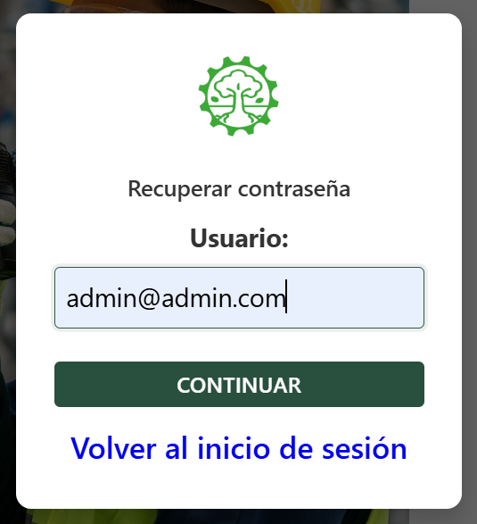
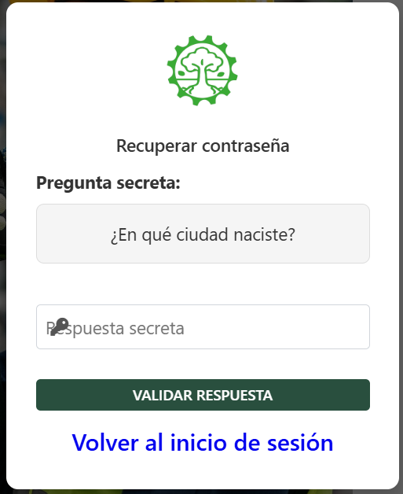

Bienvenidos a Planetapp
Manual Interactivo del Sistema Renacer
Gracias por utilizar Planetapp, la plataforma integral diseñada para la gestión eficiente de materiales reciclables y la administración de operaciones de compra y venta.
Objetivo del Sistema
Facilitar el control y seguimiento de materiales reciclables, optimizando los procesos de recolección, almacenamiento y comercialización, contribuyendo así a un futuro más sostenible.
¿Cómo usar este manual?
Este manual interactivo le guiará paso a paso por todas las funcionalidades del sistema. Utilice el menú lateral para navegar entre las diferentes secciones:
- Inicio de Sesión: Aprenda a acceder al sistema y recuperar contraseña
- Dashboard (Inicio): Conozca el panel principal de control y estadísticas
- Compras: Gestione compras y aprenda a registrar nuevas transacciones
- Ventas: Administre ventas y registre operaciones de salida
- Gestión de Materiales: Gestione categorías y registre nuevos materiales
- Informes: Genere reportes de compras, ventas e inventario
- Personas: Administre asociados y empresas del sistema
- Inventario: Consulte stock y valor de materiales en tiempo real
- Movimientos de Stock: Revise entradas, salidas y trazabilidad
- Configuración: Personalice parámetros del sistema
- Componentes: Guía de botones y atajos de teclado
- Glosario: Términos importantes del sistema
1. Inicio de Sesión
Acceso al Sistema

Bienvenido a Planetapp. Para ingresar, utilice las siguientes credenciales:
Usuario: admin@admin.com
Contraseña: admin4
Recuperación de Contraseña
- Ingrese su correo electrónico.
- Responda la pregunta secreta configurada.
- Establezca su nueva clave de acceso.
- Resumen monetario de Ventas y Compras del día.
- Feed de actividad reciente con detalles de materiales.
- Gráficas estadísticas de materiales más transaccionados.
- Registro: Selección de material, peso y precio.
- Anulación: Solo es posible si el material aún existe en stock.
- Histrorial: ver el historial de compras.
- busqueda por filtro: buscar cualquier compra con la sección de filtrado para una rapida busqueda.
- Nueva compra: se podra registrar una nueva compra.
- Acceder al módulo: Haga clic en el botón "Nueva Compra" en la sección de Compras.
- Seleccionar proveedor/recolector: Elija de la lista o registre uno nuevo.
- Seleccionar material: Escoja el tipo de material reciclable a comprar.
- Ingresar peso: Registre el peso del material en kilogramos.
- Definir precio: Ingrese el precio de compra por kilogramo.
- Confirmar: Revise los datos y haga clic en "Guardar" para completar el registro.
- Registrar nueva venta.
- Ver historial de ventas
- Ver historial de ventas
- Eliminar venta
- Acceder al módulo: Haga clic en el botón "Nueva Venta" en la sección de Ventas.
- Seleccionar cliente: Elija de la lista o registre uno nuevo.
- Seleccionar material: Escoja el tipo de material reciclable a vender.
- Ingresar peso: Registre el peso del material en kilogramos.
- Definir precio: Ingrese el precio de venta por kilogramo.
- Confirmar: Revise los datos y haga clic en "Guardar" para completar el registro.
- Creación de Categorías (Plásticos, Metales, Papel, etc.)
- Edición de precios base.
- Consulta de existencias en tiempo real.
- Acceder al módulo: Haga clic en el botón "Nueva Categoría" en la sección de Materiales.
- Ingresar nombre: Escriba el nombre de la categoría (ej: Plásticos, Metales, Papel).
- Agregar descripción: Opcionalmente, agregue una descripción de la categoría.
- Confirmar: Haga clic en "Guardar" para crear la categoría.
- Acceder al módulo: Haga clic en el botón "Nuevo Material" en la sección de Materiales.
- Seleccionar categoría: Elija la categoría a la que pertenece el material.
- Ingresar nombre: Escriba el nombre del material (ej: PET, Aluminio, Cartón).
- Definir precio base: Ingrese el precio de referencia por kilogramo.
- Agregar descripción: Opcionalmente, agregue detalles del material.
- Confirmar: Haga clic en "Guardar" para registrar el material.
- Informe de Compras: Reporte detallado de todas las compras realizadas en un período.
- Informe de Ventas: Reporte de ventas con totales y estadísticas.
- Informe de Inventario: Estado actual del stock de materiales.
- Informe Financiero: Resumen de ingresos y egresos.
- Proveedores: Registro de proveedores de materiales reciclables.
- Clientes: Base de datos de clientes compradores.
- Recolectores: Personal que recolecta materiales.
- Asociados: Personal interno del sistema.
- Acceder al módulo: Haga clic en el botón "Nuevo Asociado" en la sección de Personas.
- Ingresar datos personales: Nombre completo, cédula/DNI, fecha de nacimiento.
- Datos de contacto: Teléfono, correo electrónico, dirección.
- Asignar rol: Defina el rol del asociado (recolector, operador, administrador).
- Crear usuario: Opcionalmente, cree credenciales de acceso al sistema.
- Confirmar: Revise los datos y haga clic en "Guardar".
- Acceder al módulo: Haga clic en el botón "Nueva Empresa" en la sección de Personas.
- Tipo de empresa: Seleccione si es Proveedor o Cliente.
- Datos de la empresa: Razón social, RUC/NIT, nombre comercial.
- Datos de contacto: Teléfono, correo electrónico, dirección fiscal.
- Persona de contacto: Nombre y teléfono del representante.
- Confirmar: Revise los datos y haga clic en "Guardar".
- Stock Actual: Cantidad disponible de cada material.
- Valor del Inventario: Valor monetario total del stock.
- Alertas de Stock: Notificaciones de materiales con bajo stock.
- Historial: Registro de entradas y salidas de materiales.
- Entradas: Compras y recepciones de material.
- Salidas: Ventas y despachos de material.
- Ajustes: Correcciones manuales de inventario.
- Trazabilidad: Seguimiento completo de cada material.
- Datos de la Empresa: Nombre, dirección, teléfono, etc.
- Usuarios: Gestión de usuarios y permisos.
- Categorías: Configuración de categorías de materiales.
- Precios: Definición de precios base por material.
- Respaldo: Opciones de backup y restauración.
- Asociados: Persona/que hace parte de la empresa
- Cliente: Persona/empresa que compra materiales
- Compra: Adquisición de materiales
- Venta: Venta de materiales
- Stock: Cantidad disponible
- Anular o cancelar: Cancelar operación
- Carreta: Identificador del vehículo


2.1 Dashboard (Inicio)
El dashboard principal ofrece una vista rápida de la operación:
2.2 Gestión de Compras
Módulo para registrar la entrada de materiales de proveedores o recolectores.
Cómo Registrar una Compra
Pasos para Registrar una Nueva Compra
2.3 Gestión de Ventas
Módulo para la salida de materiales hacia clientes finales.
Funciones:
Cómo Registrar una Venta
Pasos para Registrar una Nueva Venta
2.4 Materiales
Administre el catálogo de productos reciclables.
Cómo Registrar una Categoría
Pasos para Registrar una Nueva Categoría
Cómo Registrar un Material
Pasos para Registrar un Nuevo Material
Informes
Generación de Reportes
Módulo para generar y consultar informes del sistema.
Generación del PDF y Excel
Personas
Gestión de Personas
Administre los registros de personas relacionadas con el sistema.
Cómo Registrar un Asociado
Pasos para Registrar un Nuevo Asociado
Cómo Registrar una Empresa
Pasos para Registrar una Nueva Empresa
Inventario
Control de Inventario
Visualice y gestione el inventario de materiales en tiempo real.
Movimientos de Stock
Registro de Movimientos
Consulte todos los movimientos de entrada y salida de materiales.
Configuración
Configuración del Sistema
Personalice y configure los parámetros del sistema.
3. Componentes Comunes
Guía visual de botones y acciones:
Atajos de Teclado
| Tecla | Acción |
|---|---|
| ESC | Cerrar ventana emergente (modal) |
| Enter | Confirmar o enviar formulario |
| Tab | Navegar entre campos |
4. Glosario de Términos
Glosario de palabras donde vas a saber un poco sobre como se identifican diferentes palabras en el sistema y que se refiere